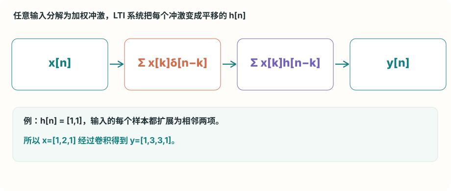
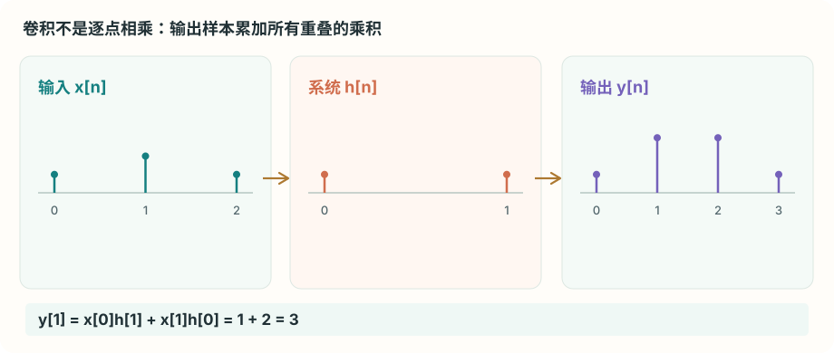

Signal · System · Insight / 03
离散时间系统：卷积是如何出现的？
线性与时不变，让一个系统可由冲激响应完整刻画。
输入是 [1,2,1]，为什么输出会是 [1,3,3,1]？
设一个滤波器把“当前输入与上一个输入”相加：y[n]=x[n]+x[n−1]。把从 n=0 开始的三点输入 [1,2,1] 送进去，并把输入区间外的值当作 0，就会得到四点输出 [1,3,3,1]。每个输入样本的作用不仅落在自己的位置，还传播到相邻输出位置。
这个规律不是某个特殊滤波器的巧合。对于线性、时不变系统（LTI），任意输入都可拆成许多加权冲激，输出就是各冲激响应的叠加。由此卷积公式自然出现。
先独立验证线性与时不变
记系统为 T。线性要求 T(ax₁+bx₂)=aT(x₁)+bT(x₂)；时不变要求输入若延迟 k 个样本，输出也只延迟 k 个样本。二者并非同一条件：时变乘法系统 y[n]=n·x[n] 是线性的，却不是时不变的；非线性系统 y[n]=x[n]² 可以时不变，但不是线性的。
把单位冲激 δ[n] 输入零状态 LTI 系统，输出 h[n]=T{δ[n]} 称为冲激响应。时不变使 δ[n−k] 的响应变成 h[n−k]，线性使带权冲激 x[k]δ[n−k] 的响应被权重 x[k] 相应放大。
从冲激分解严格走到卷积和

式（1）：固定输出索引 n；k 在整个输入域内遍历。有限序列在支撑范围外按 0 延拓。
这条等式本质上是“每个输入样本 x[k] 激发了幅度为 x[k]、位移为 k 的响应 h[n−k]”。如果系统带有非零初始状态，还需另外分析自由响应；仅靠零状态卷积不一定涵盖完整总输出。
手算一次线性卷积，再比较各项贡献

| 位置 | 相乘后求和 | 输出 |
|---|---|---|
| n=0 | 1×1 | 1 |
| n=1 | 1×1+2×1 | 3 |
| n=2 | 2×1+1×1 | 3 |
| n=3 | 1×1 | 1 |
两个有限序列长度分别为 L 和 M 时，它们的完整线性卷积长度一般为 L+M−1（没有人为截断）。但直接对 L 点 DFT 频域系数逐点相乘再逆变换，默认会得到 L 点循环卷积；若要求线性卷积，需足够补零或使用正确的分段算法。
因果性和稳定性是两项独立测试
LTI 系统因果，当且仅当 h[n]=0 对所有 n<0 成立。BIBO 稳定意味着每个有界输入都产生有界输出；对标准离散 LTI 卷积系统，充要条件为冲激响应绝对可和：
式（2）：此处描述零状态的标准 LTI 输入输出映射。
考虑 y[n]=a·y[n−1]+x[n]：选择因果零状态响应时 h[n]=aⁿu[n]。当 |a|<1，响应绝对可和、系统稳定；当 a=1.05，仍是因果系统，但输出可能无界。第五章会把它映射到 Z 平面的极点位置上。
观察有限冲激响应平滑的过程
动手验证：选择卷积输出索引 n
杆状图的横轴是离散索引 n。交互仅用于辅助验证，全部关键定义和结论均可在前文独立阅读。
交互图使用输入 x=[1,2,1,0,0,0,0] 和冲激响应 h=[0.25,0.5,0.25]。滑块读取指定 n 的输出值，并与九项完整卷积图交叉验证。静态主图使用更短的 h=[1,1]，适合逐步手算。
def convolve(x, h):
y = [0]*(len(x)+len(h)-1)
for i,a in enumerate(x):
for j,b in enumerate(h):
y[i+j] += a*b
return y
assert convolve([1,2,1],[1,1]) == [1,3,3,1]完整可执行示例（03_convolution.py）；运行 python examples/03_convolution.py。
从公式迈向真实滤波器
- 卷积和推导依赖线性与时不变；非线性或时变过程不能直接套用同一个 h[n]。
- 零状态卷积描述和带初值的自由响应需要区分。
- “因果”不代表“稳定”，有限冲激响应 FIR 与递归 IIR 的测试边界也不同。
- 数值实现除了数学等价，还必须处理整数溢出、边界填充、采样率和运算成本。
练习：把 x 改为 [0,1,0]，解释这时为何输出恰好是延迟后的 h。再对 h[n]=1（n≥0） 检验绝对可和条件。
参考资料与下一步
核心公式使用标准离散时间信号约定；数值代码是可重复的教学样例，不是硬件性能测量。对完整推导与工程边界，可从以下资料继续查证。
- MIT OCW · Digital Signal Processing study materials：离散时间信号、系统、采样与 Z 变换基础定义。
- Oppenheim & Schafer · Discrete-Time Signal Processing（MIT 开放教材）：数学定义、线性时不变系统与频率约定。
- Analog Devices · The Scientist and Engineer’s Guide to DSP：采样、卷积与工程数字信号处理背景。